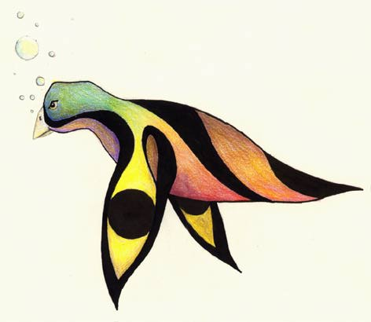

GradualZoom
What is it?
GradualZoom is a small JavaScript Library allowing to gradually zoom on images when they are clicked on, as shown above.
- It is released under the GNU Public License, any contribution, enhancement or adaptation is fairly welcomed.
- Current version is 0.1, it can be downloaded here.
- ScriptDoc Reference is available here.
- It has been succesfully tested on Mozilla Firefox, Opera, Konqueror, Safari and Internet Explorer. Please report any compatibility problems (raphael AT semeteys DOT org)
How to use it in your web page?
Check HTML/JavaScript code of this page...
- Insert the GradualZoom.js script somewhere in your HTML document (in the <head> tag for instance):
<script type="text/javascript" src="GradualZoom.js"></script>
- The image to become zoomable must fullfill following constrainsts:
- have an unique id
- have width and height attributes values
- be included in a <div> element with an unique id, width, height and overflow: hidden values precised via a style attribute
- be relatively positionned
<div id="myFrame" style="overflow: hidden; width: 197px; height: 141px">
<img id="myImage" src="Fruidefendu.jpg" width="197" height="141" style="position: relative;"/>
</div>
- Call the GradualZoom.init() function:
- Either from the onload event of the HTML page or form another <script> insert (in that case it must be placed after the GradualZoom.js include)
- With the image id and frame id as parameters (passed as arrays)
<body onload = "GradualZoom.init(['myImage'], ['myFrame']);">
How to deal with multiple images?
- Make sur that each image to be zoomable (and each containing frame) has an unique id
<div id="frame1" style="overflow: hidden; width: 100px; height: 200px">
<img id="image1" src="myFirstImage.jpg" width="100" height="200" style="position: relative;"/>
</div>
<div id="frame2" style="overflow: hidden; width: 300px; height: 175px">
<img id="image2" src="mySecondImage.jpg" width="300" height="175" style="position: relative;"/>
</div>
Pass the lists of image ids and frame ids to the GradualZoom.init() function:
<body onload = "GradualZoom.init(['image1', 'image2'], ['frame1', 'frame2']);">

Customization
If necessary, following parameters can be modified in the GradualZoom object:
- GradualZoom.maxRatio: Maximum zoom level (default value: 2)
- GradualZoom.speed: Number of unitary zooms between zoom levels (default value: 7)
- GradualZoom.timeout: Time Out, in ms, between each unitary zoom (default value: 50)